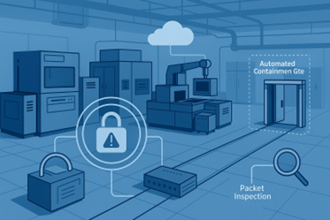

This article is adapted with permission from a recent Advantest blog post.
By Arik Peltz, Director, Technical Product Marketing, Advantest Cloud Solutions (ACS)
It’s nearly impossible to keep up with the headlines without stumbling upon another major cybersecurity incident. According to recent reports, 2024 witnessed a staggering 5.5 billion breaches globally. In the United States alone, the average cost of a single data breach clocked in at $9.36 million—slightly lower than 2023’s figure, but still a significant hit for any organization. On a global scale, the average breach cost was $4.88 million, reinforcing that the threat landscape is both vast and expensive.
Perimeter defenses are no longer enough
Traditionally, cybersecurity in semiconductor manufacturing and test environments has centered around perimeter defense—blocking threats before they enter. These measures include timely software updates, closing unused network ports, deploying firewalls, running IDS/IPS tools, and enforcing strict password protocols. While foundational, these practices fall short in the face of today’s diverse and evolving threats.
Why? Because the scope of potential vulnerabilities continues to grow. It’s not just about outdated software anymore. Misconfigured devices, overlooked network components, and even human error—like someone plugging in an unknown USB drive—can expose a facility. It’s clear: breaches are no longer rare events. They are inevitable. The challenge now lies in what happens after a breach occurs.
The semiconductor test floor: complex and exposed
A semiconductor test facility is far more intricate than it might appear. The test cell may be the focal point, but it operates within a larger network of systems—ranging from HVAC units and network switches to printers and third-party software tools. These are all potential gateways for exploitation.
Further complicating matters is the need for seamless cloud connectivity. Many test operations rely on real-time data sharing with external stakeholders for performance analytics and optimization. That constant network exposure, while essential for business operations, makes the environment even more susceptible to attacks.
The evolving nature of cyber threats
Today’s cyberattacks are smarter, stealthier, and increasingly driven by artificial intelligence (AI). Many use social engineering to build trust and then employ malware that mimics normal system behavior. These “slow burn” attacks can run undetected for extended periods, slowly extracting data or altering system operations. Conventional security systems often can’t spot these subtle anomalies in time.
The rise in customer-facing data sharing exacerbates this issue. As test facilities transmit more data to clients, they inadvertently widen their attack surface. Without a robust containment strategy, these vulnerabilities can become entry points for more sophisticated breaches.
Introducing a containment-first approach: True Zero Trust™
To address these challenges, Advantest advocates for a containment-first strategy, embodied in its True Zero Trust™ Environment. This model borrows its philosophy from high-risk environments like the International Space Station, where systems are designed to automatically isolate compromised sections to prevent broader damage.
Here’s how it works:
- Automated containment gates on the test floor that activate in response to suspicious activity
- Built-in assumption that threats can move both upward and downward across the facility
- Shared accountability between OSATs and fabless companies for maintaining a secure test floor
- Full traffic visibility via packet inspection and detailed logging
- Encrypted communications between equipment and central containment servers
- Verification of third-party software through mandatory software bills of materials (SBOMs)
This model doesn’t just focus on keeping threats out—it plans for when, not if, they get in. Every node, transaction, and data packet is treated as untrusted until proven otherwise.
The power of ACS RTDI™
At the heart of Advantest’s containment strategy is the ACS Real-Time Data Infrastructure (ACS RTDI™). This platform provides the foundation for building a secure, flexible, and data-rich test environment.
ACS RTDI™ includes:
- A communication backplane spanning the entire test floor
- Edge computing nodes that allow local processing and reduce data exposure
- Advantest Unified Server for orchestration and policy enforcement
- A containerized application hub that supports isolated, scalable software deployment
ACS RTDI™ not only facilitates secure operations but also unlocks advanced capabilities such as adaptive test, data feedforward and backward, outlier detection, and AI-driven predictive modeling. It’s security and innovation, rolled into one powerful solution.
Looking Ahead: Secure Innovation as a Competitive Edge
The future of semiconductor testing is moving toward intelligent, semi-autonomous systems powered by AI. These applications demand real-time responsiveness and uninterrupted data flow—both of which are incompatible with outdated security models.
Containment isn’t just a cybersecurity necessity—it’s a foundation for innovation. Through the True Zero Trust™ framework and ACS RTDI™, organizations can safeguard their intellectual property while enabling breakthrough performance enhancements.
To further support this vision, Advantest offers the ACS Solution Store—a digital marketplace featuring software modules tailored to AI/ML, big data analytics, and secure test operations. These tools are designed to be customizable, scalable, and ready to meet the evolving demands of the semiconductor industry.